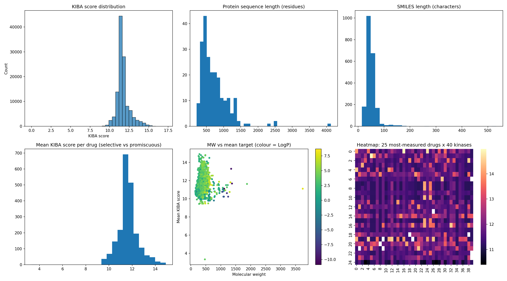
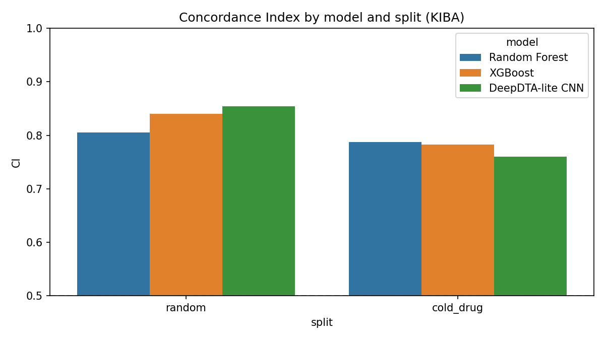
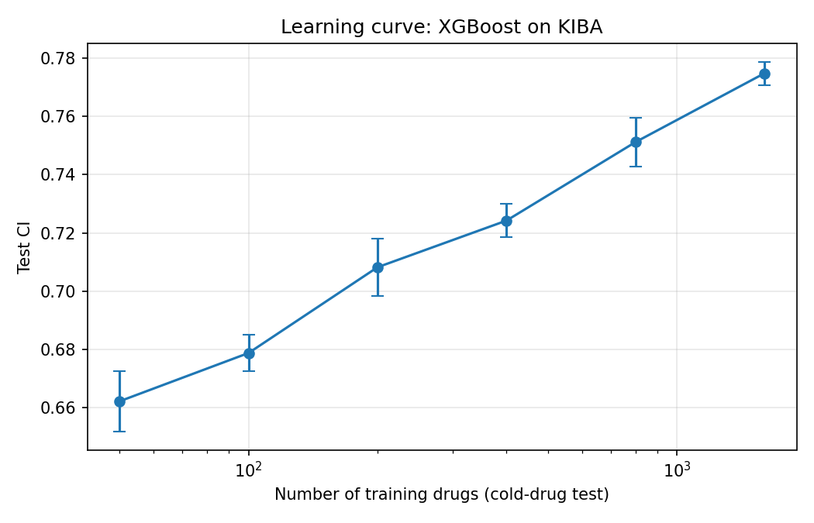
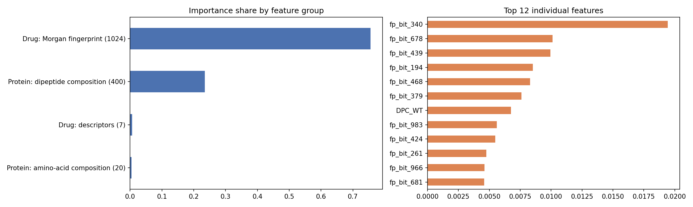
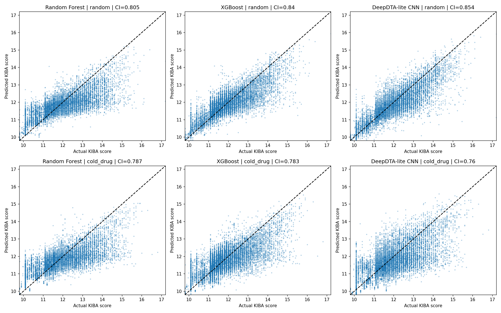
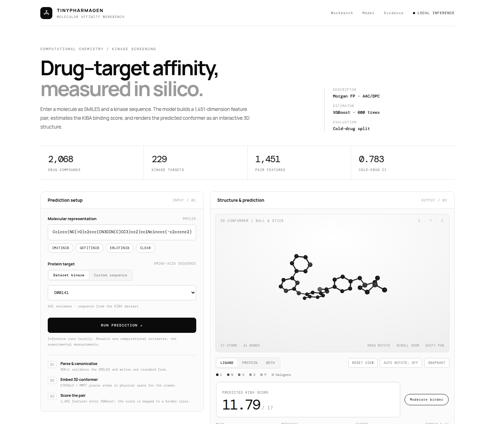

We train and compare three models — Random Forest, XGBoost, and a DeepDTA-style 1-D CNN — on the public KIBA benchmark, evaluate them on a strict cold-drug split, and deploy the selected model behind a Three.js web interface that renders the predicted molecular conformer in 3D.
| DATASET | KIBA · 2,111 drugs × 229 kinases · 118,254 pairs |
| SOURCE | github.com/hkmztrk/DeepDTA/tree/master/data |
| PRIMARY METRIC | Concordance Index (cold-drug split) |
| SELECTED MODEL | XGBoost · cold-drug CI 0.783 |
| CODE | github.com/p243000/tinypharmagen |
Discovering a drug takes 10–20 years and billions of dollars. A central bottleneck is deciding which small molecules bind strongly to which disease-related protein. Laboratory measurement is slow and expensive, so computational models are used to rank candidate molecules before any assay is run.
Task. Given a drug molecule and a kinase protein, predict the binding affinity.
This is a supervised regression problem: learn a function affinity = f(drug, protein)
from thousands of lab-measured triples.
| Input | Representation | Example |
|---|---|---|
| Drug | SMILES string | CC(=O)Nc1ccc(O)cc1 |
| Protein | Amino-acid sequence | MKKFFDSRREQGSK… |
| Output | One real number | KIBA score (higher = stronger binding) |
Why kinases. Kinases are enzymes that act as biological on/off switches by phosphorylating other proteins. When a kinase is permanently “on” it can drive uncontrolled cell growth, which makes kinases primary targets in cancer therapy — and makes high-quality benchmark data available.
We use the KIBA benchmark (Tang et al., 2014) and support DAVIS (Davis et al., 2011); both are downloaded from the public DeepDTA repository. The data is a matrix of measurements — drugs × kinases — and every non-empty cell is one training example.
| KIBA (used) | DAVIS (supported) | |
|---|---|---|
| Drugs × kinases | 2,111 × 229 | 68 × 442 |
| Labelled pairs | 118,254 | 30,056 |
| Affinity measure | Composite Ki/Kd/IC50 score | Kd (nM) → pKd |
| Missing cells | ≈76% | 0% |
| Block | Size | Description |
|---|---|---|
| Drug | 1,031 | 1024-bit Morgan fingerprint (radius 2, ≈ECFP4) + 7 physicochemical descriptors: molecular weight, LogP, TPSA, H-bond donors, H-bond acceptors, rotatable bonds, rings |
| Protein | 420 | Amino-acid composition (20 fractions) + dipeptide composition (400 adjacent-pair fractions) |
| Pair | 1,451 | Concatenated drug + protein vector |
| Target | 1 | KIBA score (DAVIS: pKd = −log10 Kd) |
StandardScaler fitted on training data only.GroupShuffleSplit on molecule identity) where every pair of a held-out drug goes to the test set.
For the CNN, 10% of the training pairs form a validation slice used for epoch selection.The target distribution is narrow and bell-shaped around 11.5 with a few low outliers, so the regression target is well behaved. Protein lengths vary widely (up to ≈4,100 residues) and SMILES lengths are skewed, which motivates fixed-length representations. Molecular weight and LogP show only a weak trend against mean potency, i.e. simple global descriptors alone are insufficient.

Three models were trained, covering both major families.
| Model | Family | Input | Key settings |
|---|---|---|---|
| Random Forest | Bagging | 1,451 features | 100 trees, depth 18, max_features 0.1, leaf 5 |
| XGBoost | Gradient boosting | 1,451 features | 600 trees, η 0.05, depth 8, subsample 0.8, colsample 0.5 |
| DeepDTA-lite CNN | Deep learning | Raw SMILES + sequence | Embedding 64, filters 32/64/96, global max-pool, dense 512-256-1 |
Metrics. MSE, RMSE, R², Pearson r, Spearman ρ and the Concordance Index (CI). CI is primary because the practical task is ranking candidates, not exact potency: CI is the probability that, for a random pair of pairs, the model orders the stronger binder first (0.5 = random).
| Split | Model | MSE ↓ | R² ↑ | Pearson ↑ | Spearman ↑ | CI ↑ | Time |
|---|---|---|---|---|---|---|---|
| Random | Random Forest | 0.322 | 0.540 | 0.751 | 0.756 | 0.805 | 168 s |
| Random | XGBoost | 0.216 | 0.691 | 0.836 | 0.822 | 0.840 | 29 s |
| Random | CNN | 0.199 | 0.716 | 0.849 | 0.839 | 0.854 | 483 s |
| Cold-drug | Random Forest | 0.382 | 0.473 | 0.699 | 0.716 | 0.787 | 169 s |
| Cold-drug | XGBoost | 0.360 | 0.502 | 0.710 | 0.708 | 0.783 | 28 s |
| Cold-drug | CNN | 0.421 | 0.419 | 0.657 | 0.656 | 0.760 | 476 s |

Rule fixed before seeing results: choose by cold-drug CI; if models are within ≈0.01 CI, treat them as tied and break the tie on practicality — training speed, model size, deployability and explainability.
Selected model: XGBoost. It matches Random Forest on ranking quality (ΔCI = 0.004, within noise), leads on MSE, R² and Pearson for unseen drugs, and is by far the most practical to deploy.
XGBoost builds an additive model of small regression trees: ŷ(x) = Σk η fk(x). It starts from a constant, computes the residuals ri = yi − ŷi, fits a shallow tree to those residuals, and adds it with a small learning rate η = 0.05. Repeating for 600 rounds is gradient descent in function space: where a neural network moves weights downhill, boosting adds trees downhill. A regularised objective penalises tree size and leaf magnitudes, and row/column subsampling adds further variance control. Depth-8 trees can represent drug × protein interactions, which is exactly what binding depends on. Random Forest instead averages many independent deep trees (variance reduction); the CNN learns its own features but needs many more distinct drugs.
With a fixed cold-drug test set, CI rises monotonically with the number of training drugs: 0.662 at 50 drugs → 0.679 (100) → 0.708 (200) → 0.724 (400) → 0.751 (800) → 0.775 (1,600). The absence of a plateau shows the limiting factor is data diversity, not model capacity. It also explains why DAVIS (only ≈54 training drugs) sat on the steep part of the curve.


Gain-based importance: ≈75% drug Morgan fingerprint bits, ≈23% protein dipeptide composition, ≈1% molecular descriptors and amino-acid composition. The model therefore uses both sides of the pair; protein composition supplies the target-specific signal beyond “this drug is generally potent”. Importance describes what the model uses, not biological causation.

The selected model is deployed behind a local HTTP server (app.py) with a monochrome
Three.js frontend (index.html). The user flow:
features.py used in training, scores it with XGBoost, embeds a 3D conformer (ETKDGv3 + MMFF),
and returns the score, binder class, canonical SMILES and atom/bond geometry. A view toggle then switches between
the ligand, the target kinase's 3D backbone, and a side-by-side co-display.
Visualisations. The workbench includes a rotatable ball-and-stick viewer (orbit, zoom, pan, auto-rotate,
snapshot) and a LIGAND / PROTEIN / BOTH toggle. The protein view renders the target kinase's AlphaFold
Cα backbone as a smooth tube coloured by per-residue prediction confidence (pLDDT), fetched and cached on demand via
/api/structure. A score gauge marks the strong/moderate thresholds, and a model-analysis section is
generated live from the results tables: the CI leaderboard, the learning curve, and gain-importance charts.
Training figures are displayed in grayscale to match this report.
Deployment notes. The model is retrained on all pairs before export; all reported metrics come from the
held-out splits. Predictions for drugs outside the training set are less reliable than random-split numbers
suggest, and the interface states this explicitly with the cold-drug CI. A helper ?demo=1 URL parameter
auto-runs a prediction for demonstrations.
We compared Random Forest, XGBoost and a DeepDTA-style 1-D CNN for kinase–drug affinity prediction on KIBA. Random-split performance (CI 0.81–0.85) is partly an artefact of seeing the same drugs during training. On the stricter cold-drug split, performance is CI 0.76–0.79 and the tree models beat the CNN. XGBoost was selected: it ties Random Forest on ranking, has the best error metrics on unseen drugs, and is the most practical to train and serve. A learning curve shows accuracy on new molecules keeps improving with more training drugs, so data diversity — not the model — is the main constraint.
| Item | Location |
|---|---|
| Source code | github.com/p243000/tinypharmagen |
| Notebook | notebook/p243000_p243012_p243032_bse5a_ai_project.ipynb |
| Dataset | github.com/hkmztrk/DeepDTA/tree/master/data |
| Web application | python app.py → http://127.0.0.1:8000 |
| Demo | /?demo=1 auto-runs a prediction (see README) |